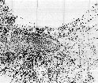
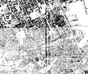
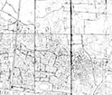

Tavola 16 - Servizi a rete

Tavola 16/1 - Servizi a rete - Rete fognante quadro urbano
Tavola 16/2 - Servizi a rete - Rete fognante nei 4 mandamenti
Tavola 16/3 - Servizi a rete - Rete Idrica quadro urbano
Tavola 16/4 - Servizi a rete - Rete Idrica nei 4 mandamenti
Tavola 16/5 - Servizi a rete - Rete Telefonica quadro urbano

Tavola 16/6 - Servizi a rete - Rete Telefonica nei 4 mandamenti
Tavola 16/7 - Servizi a rete - Rete Gas quadro urbano

Tavola 16/8 - Servizi a rete - Rete Gas nei 4 mandamenti
Tavola 16/9 - Servizi a rete - Rete elettrica nei 4 mandamenti - Stato di fatto
Tavola 16/10 - Servizi a rete - Rete elettrica nei 4 mandamenti - Progetto
Elenco completo di tutti gli elaboarti del Centro Storico Palermo